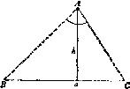

同时改变未知数和已知数的一个有趣的方式是把未知数与数据之一进行
互换(参见“你能利用这结果吗?”一节第3点)。
(7) 例子。已知三角形一边a、垂直于a的高h和a的对角a，作一个三角形。
未知是什么?一个三角形。
已知是什么?两条线段a，h和角a。
现在，如果我们对几何作图问题还比较熟悉的话，我们可尝试把这样一个
问题化简为点的作图问题。
我们画线段 BC 等于边长a，所有余下要找的就是三角形
图16
中a边所对的顶点 A( 见图16)。这样我们就有了个新问题。
未知是什么?点 A 。
已知是什幺?直线h，角a，已给定位置的两点 B ， C 。
条件是什么?点 A 到直线 BC 的垂直距离应为h，∠ BAC= α。
事实上，我们已经变换了我们的问题，改变了未知和已知。新的未知是一
个点，老的未知是一个三角形。在这新老两个问题中，某些已知事项是共同的，
即线段h和角α；但在老问题中给定的是长度a，而现在则代之以给定两点 B 与 C 。
新问题不难。下列建议使我们十分接近于解。
把条件的各个部分分开。本题的条件有两部分，一个与已知的h有关，另一
个与已知的α有关。对这个未知点要求：
(I) 对直线 BC 的距离为h；
(II)成为一角的顶点，此角大小为α，其两边通过给定点 B， C
如果我们只保留一部分条件，而舍去其余部分，则此未知点不能完全确定。
有许多点都可满足条件中的(I)这一部分，这就是那些位于平行于 BC 且相距为h
的平行线上的所有点*。这根平行线是满足部分条件(I)的点的轨迹。满足部分
条件(II)的点的轨迹是一圆弧，其端点为 B 与 C 。我们可画出这两个轨迹；它们
的交点就是我们所求作的点。
——————
*：过 B 与 C 的直线把平面一分为二，我们选择其中之一在它上面作出 A 。所以这
里我们可以只考虑 BC 的一根平行线，否侧我们应当考虑两根这样的平行线。